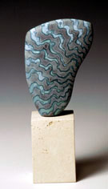

|
Peter Beard
British ceramist.
 Images © Peter Beard
Images © Peter Beard
British
ceramist Peter
Beard has been a Fellow of the Craft Potters Association
since 1976 and a member of the International Academy of Ceramics
since 1999. Beard studied industrial design and furniture design
at Ravensbourne College of Art in London from 1970–73. In
1975 he opened his first studio in Kent, making one-of-a-kind pieces.
Beard is known for his wheel-thrown vessels and hand-built biomorphic
stoneware sculpture with layered shiny, matt and semi-matt glazes.
Some works are inticately carved in unglazed black stoneware or
white porcelain and bone china. Beard also works in bronze and glass.
He cites as his main source of inspiration landscape in all forms
and the art of ancient Egypt. In 1996 he was awarded the INAX European
Design Prize in Japan and in 2002 he won a Silver Medal at the International
Biennale of Ceramic Art in Vallauris, France. He also published
a book, Resist and Masking Techniques in 1996.

Artist's Statement
"The objective of my work is to produce beautiful objects
that are modern, yet owe an allegiance to history, giving them a
timeless quality.
Strong simple shapes are decorated with complex glaze surfaces
to complement and excite the eye. Landscape in all forms is my main
source of inspiration, along with the art of ancient Egypt. Combinations
of shiny, matt and semi-matt glazes are built up in layers to create
the textural surfaces during firing. Wax is used to isolate areas
during glaze application".
An Insight to Peter Beard, his Work and his Philosophy
Art communicates by combining process, materials and concept, this
fusion is particularly poignant in the world of ceramics. Peter
Beard has explored this area through his ceramics for many years
and his success is verified by international reputation.
Making is central to the crafts and arguably it defines the nature
of the man, the toolmaker. The earliest ceramics took the form of
idols offered to the gods on a fire, thus proving that the act of
making has spiritual and aesthetic considerations equalling, or
perhaps exceeding, its utilitarian ones.
Peter Beard is primarily interested in aesthetic considerations;
his experience transcends the skill needed to create an object.
It is his ability to define and create a beautiful object that singles
him out. Although Peter is a master of the processes he employs,
(usually slab building or throwing) he is not a slave to technique.
He draws together slabs of clay to form an elegantly twisting line
along the edge of a pot, yet he is brave enough to leave the rim
pinched and fresh, acknowledging the act of forming the clay.
If a process is to speak of anything then it must speak unabashedly
of itself; the hand forming the clay. Every pot Peter makes bears
testimony to this.
Ceramics is one of the few areas where art meets science. The selection
of materials is often based on empirical as much as on personal
preference. It is when the research and preferences meet that a
true sense of the maker’s intentions become clear. This is
especially evident in Peter’s work with glazes.
He is a man who takes risks, glazes bubbling here and running there.
These risks have their dividend; the run of the glaze inform us
directly of the subtle curves of a form, as gravity takes an opportune
moment to intervene before being frozen as the kiln cools. The blisters
represent a meeting of the two opposing glazes along a boundary
defined by the makers hand; a pattern being too crude a word to
articulate the juxtaposition of these two volcanic forces. It is
Peter's combination of research, risk taking and self-criticism
that enables him to keep up his fearless standard, right to the
edge of what even he thinks possible.
Peter is aware of historical ceramic precedents, the ancient art
of Egypt is a touchstone for a lot of his recent work. He is no
imitator though, and his work is a personal reinvention of the past,
at once contemporary yet imbued with an archaic authority.
This reinvention is born of Peter’s approach to his work.
He sees himself as firstly a maker. It is by making that ideas reveal
themselves and are refined. The act of making distils Peter’s
experiences, be they a favourite landscape or a pre-Raphelite painting.
The results bear no direct lineage to any one precedent, but they
are a pretty potent brew.
In Peter Beard's work the trinity of process, material and concept
are so closely woven that it is almost impossible to tease them
apart. Peter's ability to twist such tightly spun cloth shows his
immense skill and determination. The end results speak clearly of
the potter himself. It is no surprise that his pots have garnered
such acclaim.
Peter Beard's website: http://home.clara.net/peterbeard/index.htm.
More Featured Artists
More Articles
|
{kind=link}
{kind=link}
{kind=link}
{kind=link}
{kind=link}
{kind=link}
{kind=link}
{kind=link}